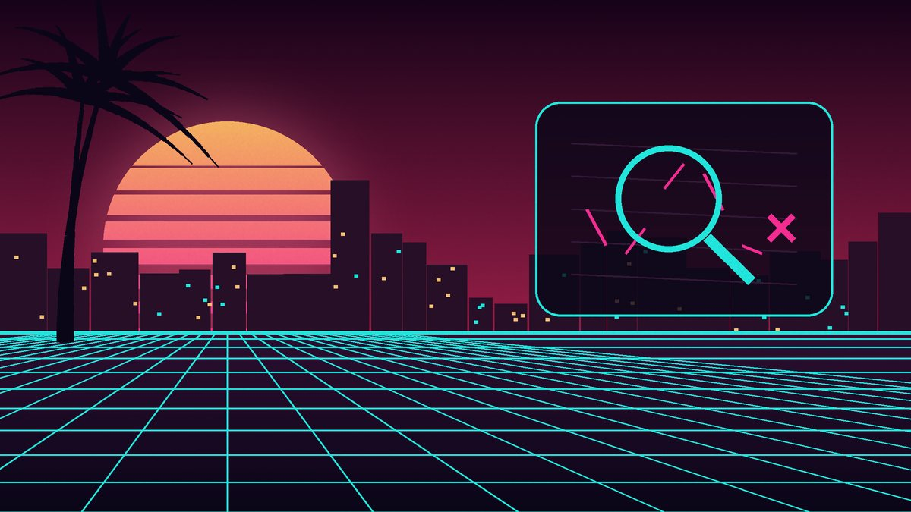

Los cuatro carteles de Peewees: dónde están y qué ropa gratis dan al escanearlos todos
Hay cuatro vallas publicitarias de la cadena de pollo frito Peewees repartidas por Leonida que solo sirven para algo si las escaneas con el móvil. Encontrarlas las cuatro desbloquea un regalo en la tienda de Belville.
Por Redacción Golpe Diario · Publicado el

Qué ha pasado
Peewees es la cadena de comida rápida de pollo frito que aparece por todo GTA 6, la versión del juego de una franquicia real de hamburguesas y pollo. Según la guía de Insider Gaming, Rockstar escondió cuatro vallas publicitarias de la marca por el mapa, una por condado, que no tienen ninguna función hasta que el jugador las escanea con el móvil de Jason o Lucía a través de la app WAiNK, la misma herramienta que se usa para otros coleccionables del juego. La guía de PowerPyx coincide en que son exactamente cuatro y en que hay que acercarse con el coche hasta tenerlas a la vista para poder escanearlas.
La primera valla está en Mariana County: PowerPyx la sitúa en la frontera con Grassrivers, al este de la armería Richardson Hunting Supplies, entre los carriles de la autovía. La segunda está en la zona de Vice-Dale, en Balsero, al noroeste del puesto Ron Stop'n'Snack, junto a una rampa de salida; Insider Gaming la describe como una ubicación muy abierta y a la vista desde la carretera. La tercera está en Leonard County, cerca de la orilla este del lago Leonida, junto al cruce que hay en la esquina noroeste del recinto de Mount Hailes Club; Insider Gaming añade como referencia un cartel de stop cercano con el nombre «Citrus Stop». La cuarta está en Lummox County, al sureste de la localidad de Grayson, dentro de Mount Kalaga National Park, junto a la carretera; las dos guías avisan de que, según por dónde se llegue, los árboles pueden tapar la valla y hacer que se pase de largo sin verla.
Para escanear cada una no hace falta nada especial: basta con sacar el móvil, abrir WAiNK y apuntar a la valla desde una distancia razonable, igual que con el resto de puntos de interés de esa app. No es necesario encontrarlas en un orden concreto ni completarlas en una sola sesión de juego: el progreso se queda guardado en la partida.
La recompensa llega después de escanear las cuatro: hay que ir a un restaurante Peewees en Belville y hablar con el encargado tras el mostrador. Según Insider Gaming, ahí se entregan gratis una gorra y una camiseta de la colaboración «Mr. Enigma x Peewees». PowerPyx añade que el regalo se desbloquea para los dos protagonistas sin importar cuál de ellos haya hecho el escaneo, así que no hace falta repetir la ronda con el otro personaje.
Ninguna de las dos guías menciona ventajas adicionales más allá de la ropa, aunque conviene tener en cuenta que varios artículos de vestuario de GTA 6 llevan efectos secundarios en tiendas concretas: por eso, una vez conseguida, merece la pena comprobar en el propio Peewees si lleva algún descuento al llevarla puesta.
Qué significa para ti
- Son cuatro vallas, una por condado: Mariana County, Vice-Dale (Balsero), Leonard County y Lummox County. No hace falta un orden fijo.
- Para escanear cada una, abre la app WAiNK en el móvil del personaje y apunta a la valla desde la carretera; no hace falta bajarte del coche.
- En Lummox County ve despacio: los árboles pueden tapar la valla según por dónde llegues, avisan tanto Insider Gaming como PowerPyx.
- Con las cuatro escaneadas, entra en un Peewees de Belville y habla con el encargado del mostrador para recoger gratis la gorra y la camiseta «Mr. Enigma x Peewees».
- El regalo cuenta para los dos protagonistas a la vez: no hace falta repetir el escaneo ni la visita a la tienda con Jason y con Lucía por separado.
Contrastado con: Insider Gaming · PowerPyx
Sigue leyendo
WAiNK: la categoría de coleccionables que esconde 31 puntos de interés y un trofeo por hacerte con el 100 % de GTA 6
GTA 6 reparte landmarks, curiosidades y esculturas por todo el mapa para que los escanees con el móvil de Jason o Lucía. Esta es la cuenta real de cuántos hay y qué trofeo consigues si los juntas con el resto de coleccionables.
El Thrax, el premio final de la lista de coches de Randy en GTA 6, está en una isla que no sale en el mapa
Randy pide 22 coches para su colección particular, y el último, un Thrax, lo guarda en una isla a la que solo se llega en ferri y que el juego no te señala.
Las armas legendarias de GTA 6: más de 120 variantes doradas y cuatro para empezar a buscar
GTA 6 esconde más de 120 variantes doradas de armas ya conocidas, con mejores estadísticas que el modelo de serie. Esta es la guía de Insider Gaming para encontrar algunas de las más buscadas, estuche a estuche.